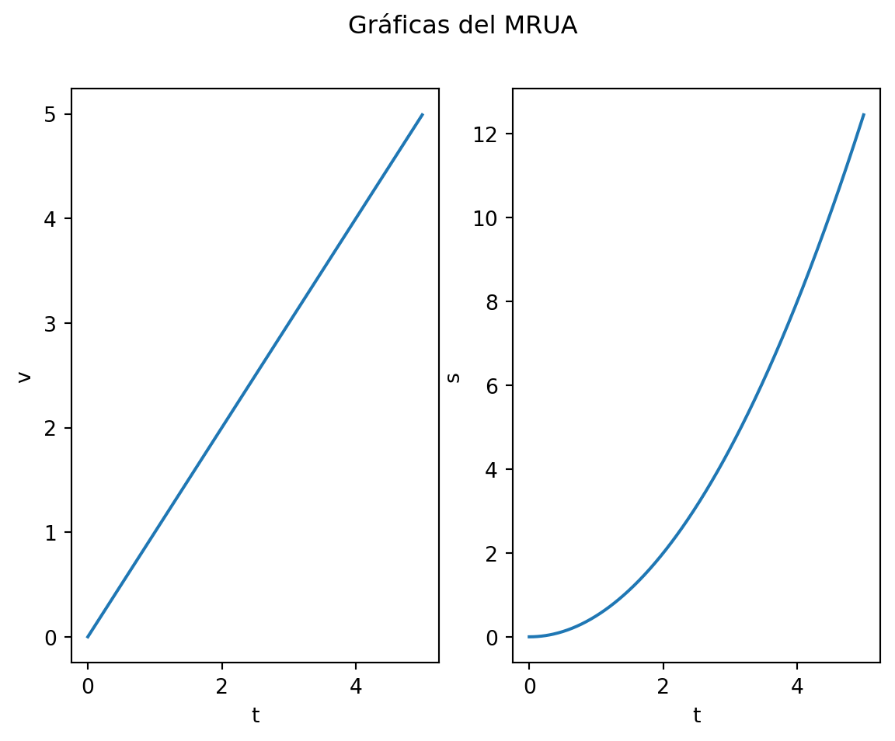
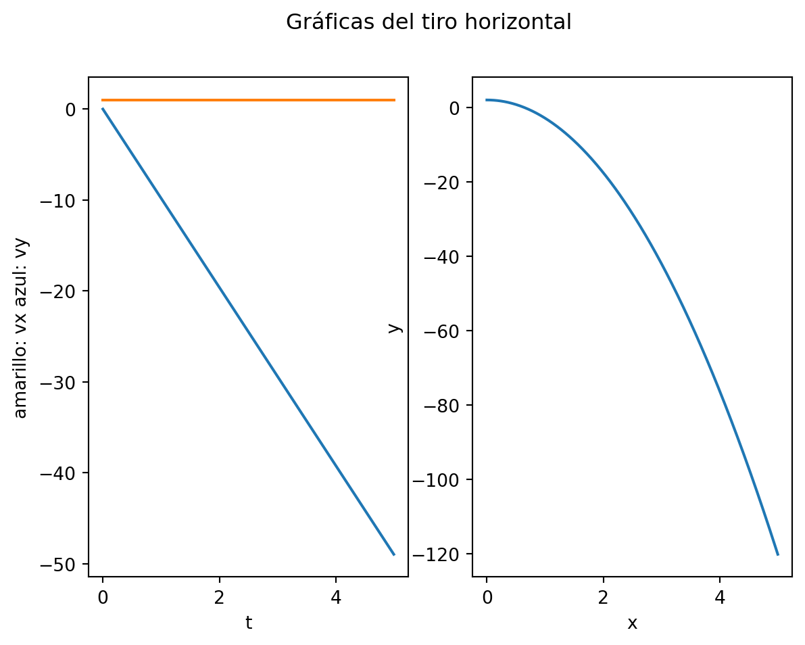
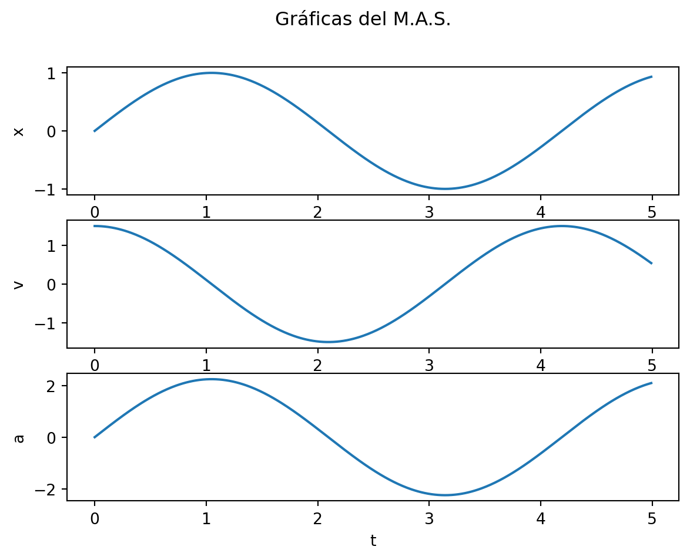

Tema 04: Cinemática. Elementos para la descripción del movimiento. Movimientos de especial interés. Métodos para el estudios experimental del movimiento.
Introducción
La cinemática estudia el movimiento de los cuerpos, así como las leyes que rigen esos movimientos. En el estudio de la cinemática no se tienen en cuenta las causas que generan esos movimientos ni las dimensiones de los cuerpos sujetos a estudio, considerando estos como meros puntos. El método más apropiado para el estudio de la cinemática sería aquel que, empezando por los movimientos más sencillos, amplia poco a poco el estudio hacia movimientos más complejos. De esta forma se adquiere un conocimiento inductivo de los mismo , permitiendo analizar cualquier movimiento como una composición de movimientos más sencillos.
El ámbito de la cinemática aborda situaciones tanto estáticas como dinámicas, en función de las fuerzas a las que se ven sometidos los cuerpos. Pese a ser una aproximación de la realidad, ha demostrado ser capaz de describir con gran precisión movimientos reales de cohetes, moléculas, planetas, etc.
En este tema se explicará que el movimiento es uno de los fenómenos físicos más básicos, consistiendo en un cambio en la posición del cuerpo. Este movimiento hará que el cuerpo describa una trayectoria. El objetivo principal será describir ese movimiento, determinando su posición, velocidad y aceleración en función del tiempo y/o la posición de este.
Estos movimientos se clasificarán en función de su trayectoria (rectilíneo, circular, parabólico, etc.) o por la presencia de aceleración (movimiento rectilíneo uniforme, movimiento rectilíneo uniformemente acelerado, etc.).
Cinemática
La cinemática es la parte de la física que se encarga de describir y estudiar los movimientos de los cuerpos sin importar las causas que originan tal movimiento. Los planteamientos de los movimientos estarán caracterizados por una descripción matemática de este. Gran parte de los movimientos quedarán reducidos a una geometría en el espacio tetradimensional, con tres dimensiones espaciales (x, y, z) y una temporal.
Para describir estos movimientos será necesario introducir magnitudes cuya variación temporal nos permitirá describir los movimientos. Podríamos describir con palabras los movimientos y los cambios en las magnitudes, pero sería demasiado laborioso. Se utilizarán herramientas matemáticas para describir estos cambios, de manera que nos permitan analizar, sintetizar y universalizar el lenguaje.
En este tema, realizaremos una primera aproximación que será fundamental: los cuerpos estudiados se considerarán como un punto material. De esta forma, se entiende que las dimensiones del cuerpo sometido a estudio son despreciables con respecto al camino recorrido. Dado que los cuerpos que se van a estudiar son cuerpos rígidos, el punto material coincidirá con el centro de masas del cuerpo. Como este es rígido, guardará una relación constante entre cada punto del objeto y el centro de masas, por lo que se podrá saber la posición de cada parte del objeto real partiendo de la del centro de masas. Esta aproximación no podrá hacerse siempre. En el caso de planetas, por ejemplo, podremos considerarlos cuerpos puntuales al estudiar sus trayectorias en torno al Sol, pero no podremos hacer eso si estudiamos la rotación sobre su eje.
Elementos para la descripción del movimiento
La descripción de los movimientos en física clásica suponen la existencia de un espacio euclídeo y de un tiempo absoluto que fluye “a su propio ritmo”, independientemente del estado de movimiento del observador.
Toda descripción del movimiento de un cuerpo debe partir del establecimiento de un sistema de referencia, es decir, un punto en el espacio que supondremos fijo y en el que se supone que las magnitudes de la posición son nulas y del que partirán unos ejes coordenados. El sistema de referencia vendrá dado por un triedro positivo de coordenadas ligado a ese punto fijo. La posición de un cuerpo se denotará como \(\vec{r}\) y será un vector en la base del espacio vectorial del sistema de referencia \((\vec{i}, \vec{j}, \vec{k})\):
\[\vec{r} = x \cdot \vec{i} + y \cdot \vec{j} + z \cdot \vec{k} = (x,y,z)\]
Diremos que un cuerpo está en movimiento si su posición varía con respecto al tiempo. Esta dependencia funcional entre el tiempo y la posición podrá escribirse de forma explícita como:
\[ \vec{r}(t) = x(t)\vec{i} + y\vec{j} + z\vec{k} = (x(t),y(t),z(t)) \tag{1}\]
La Equation 1 se denomina ecuación vectorial del movimiento. Esta expresión nos demuestra que cualquier movimiento puede representarse como una suma de 3 movimientos rectilíneos, perpendiculares entre sí tal que sus trayectorias quedan definidas en cada uno de los ejes cartesianos \(x, y, z\). Esto nos permite reducir cualquier movimiento a la forma matemática más sencilla (el movimiento rectilíneo), lo cual es sumamente importante. La Equation 1 puede escribirse de forma escalar utilizando la Equation 2, que define en paramétricas la trayectoria:
\[ \begin{cases} x = x(t)\\ y = y(t)\\ z = z(t) \end{cases} \tag{2}\]
También es posible representar la ecuación de la trayectoria eliminando el parámetro \(t\). Por ejemplo, para el siguiente movimiento:
\[ \vec{r}(t) = (2t+5)\cdot\vec{i} + t^2\cdot\vec{j} - 3\cdot\vec{k}, \] \[ x = 2t+5 \text{, } y = t^2 \text{, } z = -3, \]
\[ \begin{cases} z + 3 = 0\\ x^2 - 10x - 4y + 25 = 0 \end{cases} \tag{3}\]
Una de las magnitudes escalares más importantes es el espacio recorrido, denotado con la letra \(s\). La ecuación para obtener el espacio recorrido se llama ley horaria del movimiento (Equation 4)
\[ s = |\vec{r}(t)| = s(t) \tag{4}\]
La Equation 3 y la Equation 4 nos dan la misma información que la Equation 1
Velocidad
A partir de la Equation 1 podemos definir ciertas magnitudes que nos permitirán definir el movimiento de una forma más directa. Una de estas magnitudes es la velocidad.
Suponiendo \(t_1 \text{ y } t_2\) dos instantes diferentes, la posición en cada instante vendrá definida por: \(\vec{r_1}(t_1)\text{, } \vec{r_2}(t_2)\).
La velocidad media media de un móvil quedará definida como: \[ \vec{v_m} = \frac{\Delta\vec{r}}{\Delta\vec{t}} = \frac{\vec{r_2}-\vec{r_1}}{t_2-t_1} \tag{5}\]
Desde un punto de vista físico, esta velocidad representa la variación promedio de la posición en un tiempo dado. No entra en detalle sobre si la velocidad es constante o no, sobre si el cuerpo retrocede en algún momento, etc.
Cuando este intervalo temporal tienda a cero, la velocidad será más representativa del estado actual del cuerpo, de tal forma que si tomamos el límite cuando el intervalo de tiempo tiende a cero, la Equation 5 se convierte en:
\[ \vec{v} = \lim_{\Delta t \to 0} \frac{\Delta\vec{r}}{\Delta t} = \frac{d\vec{r}(t)}{dt} \tag{6}\]
Al resultado de este límite lo llamaremos velocidad instantánea. Podemos desarrollar esta en función de sus componentes cartesianas:
\[ \vec{v} = v_x\vec{i}+v_y\vec{j}+v_z\vec{k}=\frac{d\vec{r}(t)}{dt}=\frac{dx(t)}{dt}\vec{i}+\frac{dy(t)}{dt}\vec{j}+\frac{dz(t)}{dt}\vec{k} \tag{7}\]
La velocidad en un instante vendrá dada por un vector perpendicular a la trayectoria del cuerpo, en el sentido deo movimiento y cuyo módulo llamaremos celeridad y representaremos con una c. La celeridad representa la rapidez con la que el móvil describe la trayectoria
\[ c=\frac{ds}{dt}, \tag{8}\]
pues, para \(\Delta t \to 0\), \(\Delta s \to \Delta r\). Además:
\[ \vec{v} = \frac{d\vec{r}}{dt}=\frac{d\vec{r}}{ds}\cdot\frac{ds}{dt}=\vec{\tau}\cdot\frac{ds}{dt}=c\vec{\tau} \]
Expresando el vector velocidad referido a un sistema de ejes ligado al punto móvil obtenemos las componentes intrínsecas de la velocidad. En dicho sistema de referencia, la celeridad es la única componente intrínseca. En el S.I. la velocidad se mide en m/s y su ecuación dimensional es
\[ [v] = [L] \cdot[T]^{-1} \]
Velocidad media
Supongamos un móvil P que ocupa la posición A en el instante \(t_1\) y la posición en el instante \(t_2\). \(\vec{r_1}=\vec{OA}\) y \(\vec{r_2}=\vec{OB}\). El vector desplazamiento \(\vec{AB}\) se podrá calcular como \(\vec{AB} = \vec{OB}-\vec{OA}\), ya que \(\vec{OA}+\vec{AB}=\vec{OB}\). Por tanto, \(\vec{AB}=\vec{r_2}-\vec{r_1}\). La velocidad media entonces será:
\[ \vec{v_m}=\frac{\vec{AB}}{t_2-t_1}=\frac{\vec{r_2}-\vec{r_1}}{t_2-t_1}=\frac{\Delta\vec{r}}{\Delta t} \]
El módulo de \(\vec{AB}\) es la celeridad y es una magnitud escalar. En un movimiento rectilíneo, la velocidad media siempre tendría la misma dirección.
En un sistema de coordenadas OXY, con \(OA=(x_1,y_1)\) y \(OB=(x_2,y_2)\), las componentes del vector \(\vec{v_m}\) son:
\[ (\vec{v_m})_x = \frac{x_2-x_1}{t_2-t_1} = \frac{\Delta x}{\Delta t} \] \[ (\vec{v_m})_y = \frac{y_2-y_1}{t_2-t_1} = \frac{\Delta y}{\Delta t} \]
Y la celeridad:
\[ c = |v_m| = \sqrt{(v_m)_x^2+(v_m)_y^2} = \sqrt{(\frac{\Delta x}{\Delta t})^2 + (\frac{\Delta y}{\Delta t})^2} \]
Si suponemos el cuerpo como un sólido rígido que se desplaza con movimiento de traslación, el vector desplazamiento en un momento dado tiene el mismo módulo, dirección y sentido, por lo que todos tienen la misma velocidad media.
Aceleración
La aceleración expresa el cambio de la velocidad en el tiempo. Dado que la velocidad es una magnitud vectorial, la aceleración también lo será. La aceleración media queda definida como:
\[ \vec{a_m} = \frac{\Delta\vec{v}}{\Delta t} = \frac{\vec{v_2}-\vec{v_1}}{t_2-t_1} = \frac{\vec{v}(t_2)-\vec{v}(t_1)}{t_2-t_1} \tag{9}\]
La aceleración instantánea la definiremos como:
\[ \vec{a} = \lim_{\Delta t \to 0} \vec{a_m} = \frac{d\vec{v}}{dt} = \frac{d}{dt}( \frac{d\vec{r}}{dt} ) = \frac{d^2\vec{r}}{dt^2} \tag{10}\]
\(\vec{a}\) coincide con el ritmo de variación temporal de la velocidad en un instante dado. De igual modo que para la velocidad, la aceleración puede definirse en base a sus componentes cartesianas o sus componentes intrínsecas.
Componentes cartesianas
De la Equation 10 se pueden obtener inmediatamente las componentes cartesianas:
\[ \vec{a} = a_x\vec{i} + a_y\vec{j} + a_z\vec{k} = \frac{dv_x}{dt}\vec{i} + \frac{dv_y}{dt}\vec{j} + \frac{dv_z}{dt}\vec{k} = \frac{d^2x(t)}{dt^2}\vec{i} + \frac{d^2y(t)}{dt^2}\vec{j} + \frac{d^2y(t)}{dt^2}\vec{k} \tag{11}\]
Si trasladamos el origen del vector velocidad al origen de coordenadas, el extremo describirá una curva conocida como del movimiento. Observando la posición de la hodógrafa respecto a la trayectoria y la de la aceleración respecto a la hodógrafa, es fácil concluir que el vector aceleración estará situado en el plano que contiene a la hodógrafa y al origen de coordenadas.
Componentes intrínsecas
Estas componentes son el resultado de expresar el vector en un referencial situado sobre la trayectoria, con dos componentes: una perpendicular a la trayectoria (normal \(\vec{n}\)) y otra tangente (tangencial \(\vec{\tau}\)).
Aceleración tangencial
La aceleración tangencial es un vector con los siguientes atributos: - Módulo: es igual a la rapidez de cambio del módulo velocidad. - Dirección: es tangente a la trayectoria en todo punto. - Sentido: es el mismo que el del movimiento si el módulo velocidad aumenta y contrario si disminuye.
Aceleración normal
Esta componente aparece si el movimiento es curvilíneo, así que se genera por los cambios en la dirección de la velocidad, con independencia de lo que le ocurra al módulo. Es perpendicular a la dirección tangente y a la trayectoria. El plano determinado por ambas componentes se denomina plano osculador, y su posición varía con el tiempo
Expresando \(\vec{v}=v\vec{\tau}\) es fácil obtener las componentes:
\[ \vec{a} = \frac{d\vec{v}}{dt} = \frac{d(v\vec{\tau})}{dt} = \frac{dv}{dt}\cdot\tau + v\cdot\frac{d\vec{\tau}}{dt} \]
El primer sumando corresponde con la componente tangencial y el segundo sumando corresponde con la componente normal.
Calcular la aceleración tangencial es fácil sabiendo la velocidad.
La aceleración normal exige conocer cómo evoluciona el vector unitario tangente:
\[ \frac{d\vec{\tau}}{dt} = \frac{d\vec{\tau}}{ds}\cdot\frac{ds}{dt} \]
Realizando un estudio detallado se concluye que la componente normal vale:
\[ a_n = \frac{v^2}{\rho} \tag{12}\]
El módulo de la aceleración es:
\[ a = \sqrt{a_x^2+a_y^2} = \sqrt{a_t^2+a_n^2} \tag{13}\]
En el S.I. la aceleración tiene unidades de \(m/s^2\) y su ecuación dimensional es \([a] = [L]\cdot[T]^2\)
| \(a_n+a_t=0\) | \(a_n=0/a_t=0\) | Movimiento rectilíneo uniforme (MRU) |
|---|---|---|
| \(a_n+a_t=cte\) | \(a_n=0/a_t=cte\) | Movimiento rectilíneo uniformemente acelerado (MRUA) |
| \(a_n+a_t=cte\) | \(a_n=0/a_t\neq 0\) | Movimiento rectilíneo acelerado (MRA) |
| \(a_n+a_t=cte\) | \(a_n=cte 0/a_t=0\) | Movimiento circular uniforme (MCU) |
| \(a_n+a_t=cte\) | \(a_n = cte/ a_t= cte\) | Movimiento circular uniformemente acelerado (MCUA) |
| \(a_n + a_t =cte\) | \(a_n\neq 0 / a_t \neq 0\) | Movimiento curvilíneo acelerado (MCA) |
| Magnitud | Movimiento rectilíneo | Movimiento circular | Relación entre magnitudes |
|---|---|---|---|
| Distancia | \(e\) | \(\theta\) | \(s=\theta\cdot R\) |
| Velocidad | \(v=de/dt\) | \(\omega=d\theta/dt\) | \(v=\omega\cdot R\) |
| Aceleración tangencial | \(a_t=dv/dt\) | \(\alpha=d\omega/dt\) | \(a_t=\alpha\cdot R\) |
| Aceleración normal | \(a_n=v^2/R\) | \(a_n=\omega^2\cdot R\) | |
| Posición | \(s=s_0+v_0 t+\frac{1}{2}at^2\) | \(\theta=\theta_0+\omega_0 t+\frac{1}{2}\alpha t^2\) | \(s=\theta\cdot R\) |
| Velocidad | \(v=v_0+at\) | \(\omega=\omega_0+\alpha t\) | \(v=\omega \cdot R\) |
Movimientos de especial interés
Como hemos visto, en todo movimiento hay una relación entre las magnitudes posición, velocidad y aceleración, establecidas mediante el operador derivada. También podemos realizar el camino contrario: conociendo la aceleración y las condiciones de contorno, podemos obtener la velocidad y la posición
Movimientos rectilíneos
Estos movimientos se caracterizan porque la dirección del vector velocidad no cambia, es decir, \(a_n=0\). Dado que la trayectoria es rectilínea, el movimiento puede tratarse únicamente con la distancia al origen, por lo que mayormente se reduce a un tratamiento escalar.
Movimiento rectilíneo uniforme (MRU)
Es el movimiento de un punto cuyo vector velocidad mantiene el mismo módulo, dirección y sentido. Se definen por la condición \(\vec{v}=cte\). Por tanto, integrando \(ds=v\cdot dt\):
\[ s=s_0 + v(t-t_0) = s_0 + v\Delta t \tag{14}\]
Si \(t_0\), entonces \(s=s_0+vt\).
Movimiento rectilíneo uniformemente acelerado (MRUA)
En este movimiento, \(\vec{a_n}=0\) porque es rectilíneo, por lo que \(\vec{a}=\vec{a_t}\). Como es uniformemente acelerado, la aceleración será constante durante todo el recorrido \(\vec{a}=cte\).
Teniendo en cuenta que \(|\vec{a}|=|\vec{a_t}|=\frac{dv}{dt}\), podemos integrar desde \(t_0=0\) a \(t\), obteniendo así la ecuación de la velocidad:
\[ v = v_0 + at \tag{15}\]
Integrando \(ds = v\cdot dt\), obtendremos la ecuación que permite calcular el espacio recorrido:
\[ s = s_0 + v_0t + \frac{1}{2}at^2 \tag{16}\]
Con la Equation 15 y la Equation 16 podemos obtener la ecuación independiente del tiempo:
\[ v^2 - v_0^2 = 2a(s-s_0) = 2a\Delta s \tag{17}\]

Composición de movimientos rectilíneos
En muchos casos, el movimiento de un cuerpo debe descomponerse en movimientos más sencillos para poder analizarlo. En estos casos, se toma como base la ley clásica de velocidades \(\vec{v}(t) = \vec{v_1}(t) + \vec{v_2}(t)\).
Movimiento de proyectiles
En este tipo de movimientos, es posible describir este como la composición de dos movimientos, un MRU y un MRUA, siempre despreciando el rozamiento con el aire. El primero es consecuencia del mismo lanzamiento y el segundo es consecuencia de la acción gravitatoria.
En función del ángulo que forma el vector velocidad con la horizontal se tienen dos movimientos: tiro horizontal y tiro oblícuo.
Tiro horizontal
En este movimiento, tendremos un MRU en el eje horizontal, que llamaremos X, y un MRUA en el eje vertical, que llamaremos Y. El vector velocidad inicial sólo tendrá componente horizontal, es decir \(\vec{v_0} = v_0\cdot \vec{i}\). En estos casos, tomaremos la altura de lanzamiento como \(y=y_0\), la posición horizontal desde donde se lanza \(x_0=0\), la velocidad inicial \(\vec{v_0} = v_x\cdot \vec{i}\), la dirección vertical ascendente como positiva y el sentido del vector velocidad horizontal como positivo. La aceleración de la gravedad \(\vec{g} = -9,81\cdot \vec{j}\text{ }(m/s^2)\) se tratará como positiva en el desarrollo de las ecuaciones, ya que el signo está en el propio valor de \(g\). De esta forma se generan las siguientes ecuaciones para cada eje:
- Eje X: \(x = v_x\cdot t\)
- Eje Y: \(y = y_0 1/2\cdot gt^2\)
- \(v_y = g\cdot t\)
Utilizando las ecuaciones de la posición de los dos ejes obtenemos:
\[ y = \frac{g}{2v_x^2}x^2 + y_0 \]
Es la ecuación de la trayectoria correspondiente a una parábola con vértice en el (0,0). Aplicando la ley de adición de velocidades, la ecuación vectorial de la velocidad será \(\vec{v}(t) = v_{0x}\cdot\vec{i} + gt\cdot\vec{j}\).
Siendo su módulo \(v(t) = \sqrt{v_{0x}^2+g^2t^2}\).
Su dirección vendrá determinada por: \(\theta(t) = \arctan{\frac{gt}{v_{0x}}}\).
Derivando la velocidad obtenemos que \(\vec{a}(t) = g\cdot\vec{j}\).

Tiro oblicuo
En este caso, la velocidad inicial forma un ángulo \(\theta\) con la horizontal, pero sigue siendo una combinación de un MRU en el eje horizontal y un MRUA en el vertical (\(\vec{g} = -9.81\cdot\vec{j} \text{ }(m/s^2)\)):
\[ \text{Eje x: } x=x_0 + v_0cos(\theta)t \] \[ v_x = v_0cos(\theta) \] \[ a_x = 0 \] \[ \text{Eje y: } y= y_0 + v_0\sin{\theta} t + \frac{1}{2}gt^2 \] \[ v_y = v_0\sin{\alpha} + gt \] \[ a_y = g \]
Eliminando \(t\) de las ecuaciones de las posiciones en los ejes obtenemos:
\[ \Delta{y} = \Delta{x}\tan{\theta} + \frac{g}{2v_0^2\cos^2{\theta}}(\Delta{x})^2 \tag{18}\]
El vector velocidad quedaría:
\[ \vec{v}(t) = v_0\cdot\cos{\alpha}\cdot\vec{i} + (v_0\cdot\sin{\theta} + gt)\cdot\vec{j} \]
El tiempo de vuelo, \(\tau\) coincidirá con el momento en el que \(y=0\):
\[ 0=y_0+v_0\sin{\theta}t + \frac{1}{2}gt^2 \rightarrow \frac{1}{2}gt^2 = -v_0\sin{\theta}t \rightarrow \tau = - \frac{2v_0\sin{\theta}}{g} \]
La altura máxima, aquella en la que la componente vertical de la velocidad se anula y corresponde con \(t=\tau /2\), es:
\[ y(t=\tau /2) = y_{max} = y_0 - \frac{v_0^2\cdot\sin^2{\theta}}{2g} \]
El alcance horizontal será el desplazamiento en el eje x cuando \(t=\tau\):
\[ \Delta{x} = -\frac{v_0^2\cdot\sin{2\theta}}{g} \rightarrow \Delta{x_{max}} = -\frac{v_0^2}{g} \]
Movimiento circular
Se define como el de un punto móvil cuya trayectoria es una circunferencia. Es un tipo particular de movimiento rectilíneo. En este movimiento existe una aceleración normal no nula durante todo el movimiento. El movimiento circular se carazteriza por un radio de curvatura \(\rho\) constante e igual al radio de la circunferencia de la trayectoria. La aceleración normal siempre va a estar dirigida hacia el centro O de la circunferencia trayectoria, por lo que también la llamaremos aceleración centrípeta.
Tomando el plano de la trayectoria como plano de referencia y fijando el origen en el centro de la circunferencia, el vector posición tendrá por móduclo el radio de esta, por lo que también se la llamará radio vector.
Hay dos posibilidades para referirse al movimiento: mediante el uso de coordenadas cartesianas, como en los movimientos rectilíneos, o mediante el uso de coordenadas polares. Por comodidad utilizaremos las coordenadas polares de ahora en adelante. Por tanto, la posición del móvil en un momento dado vendrá dada por el ángulo \(theta\).
Se define velocidad angular media como el cociente:
\[ \omega_m = \frac{\Delta \theta}{\Delta{t}} \tag{19}\]
Se expresa en \(rad/s\) y representa el promedio de variación del ángulo barrido por el radio vector en un tiempo determinado. Para el cálculo de la velocidad angular instantánea, consideraremos el siguiente límite:
\[ \omega = \lim_{\Delta{t} \to 0} \frac{\Delta{\theta}}{\Delta{t}} = \frac{d\theta}{dt} \tag{20}\]
Sus unidades en el S.I. son \(rad/s^2\) y su ecuación dimensional es \([\omega] = [T]^{-1}\).
Existe una correlación entre el arco recorrido y el ángulo (en radianes) barrido por el radio vector: \(\Delta{s} = \rho \cdot \Delta{\theta}\). Por tanto:
\[ v = \frac{ds}{dt} = \rho\cdot\frac{d\theta}{dt} = \rho\cdot\omega \]
La velocidad angular se puede expresar en forma vectorial como un vector de módulo \(\omega\) con una dirección perpendicular al plano de la trayectoria y sentido el del avance de un sacacorchos que gire en el mismo sentido del movimiento (regla de Maxwell). De esto se deduce que:
\[ \vec{v} = \vec{\omega}\times\vec{r} \]
Análogamente a los casos rectilíneos, la aceleración angular media será:
\[ \alpha_m = \frac{\Delta\omega}{\Delta{t}} \tag{21}\]
Y la instantánea:
\[ \alpha = \lim_{\Delta{t} \to 0} \frac{\Delta\omega}{\Delta{t}} = \frac{d\omega}{dt}=\frac{d^2\theta}{dt^2} \tag{22}\]
Ambas se expresarán en \(rad/s^2\) y su ecuación dimensional será \([a] = [T]^{-2}\).
Se dan las siguientes relaciones entre magnitudes lineales y angulares:
\[ a_t = \frac{dv}{dt} = \frac{d(\omega\cdot\rho)}{dt} = \rho\cdot\frac{d\omega}{dt} = \rho\cdot\alpha \tag{23}\]
\[ a_n = \frac{v^2}{\rho} = \frac{\omega^2\rho^2}{\rho} = \omega^2\cdot\rho \]
\[ \vec{a} = \frac{d\vec{v}}{dt} = \frac{d(\vec{\omega}\times\vec{r})}{dt} = \vec{\omega}\times \frac{d\vec{r}}{dt} + \frac{d\vec{\omega}}{dt}\times \vec{r} \]
\[ \vec{a} = \vec{\omega}\times \vec{v} + \vec{\alpha}\times\vec{r} \]
\[ a = a_n + a_t \hspace{1cm} a_t=\alpha\times r \text{ y } a_n = \omega\times r \]
El primer sumando es un vector dirigido hacia el centro: aceleración normal. El segundo es perpendicular al plano de \(\alpha\) y de \(r\), por lo que tiene la misma dirección que \(v\): aceleración tangencial.
Movimiento circular uniforme (MCU)
En este movimiento, \(a_n = cte\), \(\alpha = 0 rad/s^2\) y \(a_t = 0\). Dado que \(\omega = cte\), la ecuación del movimiento será:
\[ \theta = \theta_0 + \omega\Delta{t} \rightarrow (t_0=0) \rightarrow \theta = \theta_0 +\omega t \]
Dado que la velocidad angular es constante, el movimiento será periódico, recorriendo \(2\pi rad\) en un tiempo determinado llamado periodo, tal que:
\[ T = \frac{2\pi}{\omega} \rightarrow \omega = \frac{2\pi}{T} \]
La frecuencia será el inverso del periodo: \(\nu = T^{-1}\), representando las revoluciones por unidad de segundo. Sus unidades en el S.I. son \(s^{-1} = ciclo/s = 1Hz\), aunque también es común utilizar las revoluciones por minuto (\(r.p.m.\)).
Movimiento circular uniformemente acelerado (MCUA)
También de forma análoga al rectilíneo, \(a_n = cte\), \(a_t = cte\), \(\alpha = cte\). Por tanto:
\[ \omega = \omega_0 + \alpha t \]
\[ \theta = \theta_0 + \omega_0(t-t_0) + \frac{1}{2}\alpha(t-t_0)^2 \rightarrow (t_0 = 0) \rightarrow \theta = \theta_0 + \omega_0 t + \frac{1}{2}\alpha t^2 \]
Juntando las dos obtenemos que:
\[ \omega^2 - \omega_0^2 = 2\alpha(\theta - \theta_0) \]
Movimiento armónico simple (M.A.S.)
En los movimientos armónicos simples, la aceleración siempre es proporcional al desplazamiento del cuerpo pero con signo opuesto. Según la Segunda Ley de Newton:
\[ -kx = ma \]
Como hemos visto anteriormente en los movimientos rectilíneos, \(a=\frac{d^2x}{dt^2}\), por lo que:
\[ \frac{d^2x}{dt^2} = -\frac{k}{m}x \]
Resolviendo esta ecuación diferencial obtenemos que:
\[ x = A\sin(\omega t + \delta) \tag{24}\]
\(\omega t + \delta\) se le denomina fase y a \(\delta\) constante de fase o corrección de fase. La constante de fase corresponde con la fase cuando \(t=0\). Hay que tener en cuenta también que \(\cos(\omega t + \delta) = \sin(\omega t + \delta + \pi/2)\), por lo que el uso del coseno o el seno se puede elegir a conveniencia. Es necesario definir una serie de términos:
- Elongación: distancia entre el punto P donde se encuentra el móvil y el centro del equilibrio O. Es la distancia \(x\)
- Amplitud: es la elongación máxima, la distancia \(A\), contada a partir de O.
- Periodo: el tiempo que tarda el móvil en realizar una oscilación completa, es decir, entre que se encuentra en una fase determinada y vuelve a esa misma fase. Se representa con la letra T.
- Frecuencia: número de oscilaciones que realiza el cuerpo en un segundo. Es el inverso del periodo.
La velocidad del cuerpo quedará definida como:
\[ |\vec{v}| = \frac{dx}{dt} = A\cdot\omega\cos(\omega t + \delta) \tag{25}\]
Por consiguiente, su aceleración será:
\[ a = \frac{dv}{dt} = -A\cdot\omega^2\sin(\omega t + \delta) \tag{26}\]
\[ a = \frac{-kx}{m} = -\omega^2 x \rightarrow \omega = \sqrt{\frac{k}{m}} \]

Métodos para el estudio experimental del movimiento
Movimiento rectilíneo uniforme
Para poder observar el MRU disponemos de un cochecito arrastrado en un carril por un motor eléctrico mediante un hilo que se va recogiendo en una rueda adosada al eje del motor. En el carril se señalizan diferentes distancias.
Procederemos de la siguiente forma:
Aflojamos la rueda y llevamos el coche al punto de origen y volvemos a apretarla.
Cronometramos el tiempo empleado por el coche para ir desde el origen a la última marca de distancia. A medida que el coche vaya pasando por las marcas de distancia vamos recogiendo el tiempo transcurrido.
Repetimos el paso anterior 5 veces.
Calculamos la media de tiempo empleado para alcanzar cada marca y con ello calculamos la velocidad en cada caso. Con ello, comprobaremos que las velocidades coinciden y se trata de un MRU.
También puede representarse de varias formas:
- Mediante una gráfica que represente las velocidades en función del tiempo.
- Representando la posición frente al tiempo, calculando la velocidad como la pendiente de la recta resultante.
Movimiento uniformemente acelerado (MRUA)
Realizaremos un experimento igual que el anterior, pero con un plano inclinado y dejando caer una bola de acero. Registraremos el tiempo transcurrido en llegar hasta cada marca y obtendremos la velocidad en cada tramo. Con cada par de velocidades y las marcas de tiempo registradas, podremos calcular la aceleración. Veremos que las aceleraciones obtenidas son similares, dando la idea de un MRUA.
También podemos realizar las siguientes representaciones:
- Velocidad en función del tiempo, cuya pendiente de la recta resultante es la aceleración.
- Posicion en función del tiempo, de tal forma que la pendiente en cada punto coincidirá con la velocidad instantánea.
Tiro horizontal y parabólico
Para este experimento necesitaremos: * 1 soporte y pinza * 1 carril de deslizamiento * 1 bola de acero * 1 pie de soporte * 1 hoja de papel carbón * 1 hoja de papel milimetrado * 1 esponja amortiguadora * 1 pie de rey

En el punto O, el móvil tiene una velocidad de componentes:
\[ v_{0x} = v_0\cdot\cos\alpha \] \[ v_{0y} = v_0\cdot\sin\alpha \]
El movimiento según el eje XX’ es MRU y en el eje YY’ es MRUA:
\[ x = v_0t\cos\alpha \] \[ y = v_0t\sin\alpha + \frac{1}{2}gt^2 \]
\[ y = x\cdot\tan\alpha + \frac{g}{2v_0^2\cos^2\alpha}x^2 \rightarrow y = ax^2 + bx \]
\[ a=\frac{g}{2v_0^2\cos^2\alpha} \text{ y } b=\tan\alpha \]
Procedimiento:
- Colocamos la banda de papel milimetrado sobre el soporte vertical, sujetándola con papel adhesivo.
- Marcamos sobre dicho papel una línea horizontal que coincida con el centro de la bola en el extremo más bajo del carril de lanzamiento.
- Separamos de 2 en 2 cm el soporte vertical y dejamos caer la bola a lo largo del carril, de forma que al abandonarlo describa una curva en el aire.
Para registrar el impacto sobre el papel milimetrado, ponemos delante el papel carbón.
Repetimos el lanzamiento 3 veces para cada valor de x, tomando la media aritmética.
- Medimos el ángulo \(\alpha\). Para ello hallamos x e y para un punto cualquiera.
- Medimos también la altura h desde la que se ha lanzado la bola
Con los datos representamos la gráfica de la trayectoria.
Un laboratorio virtual que proporciona materiales para el estudio práctico del movimiento de los cuerpos se puede encontrar en:
Conclusión
En este tema hemos estudiado el movimiento de los cuerpos caracterizándolos por sus parámetros significativos: posición, velocidad y aceleración.
Hemos referido la aceleración al triedro intrínseco y con base a la expresión resultante hemos realizado el estudio exhaustivo de los movimientos. Esto ha dado lugar a su clasificación atendiendo al valor de sus componentes intrínsecas.
También hemos desarrollado el estudio de un movimiento singular como es el movimiento armónico simple.
Bibliografía
TIPLER, P. A. y MOSCA, G. (2006): Física. Barcelona: Reverté. Una buena presentación de los temas con muchos ejemplos de aplicación resueltos y una colección amplia de problemas catalogados en función de su dificultad.
añadir Serway Jewlett y animaciones del phet y ophysics